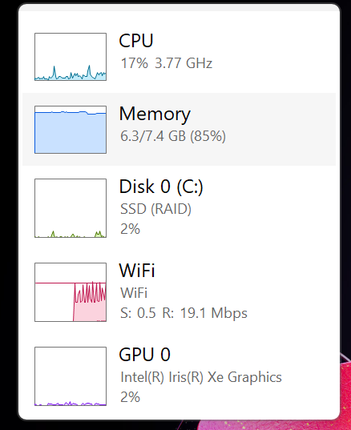
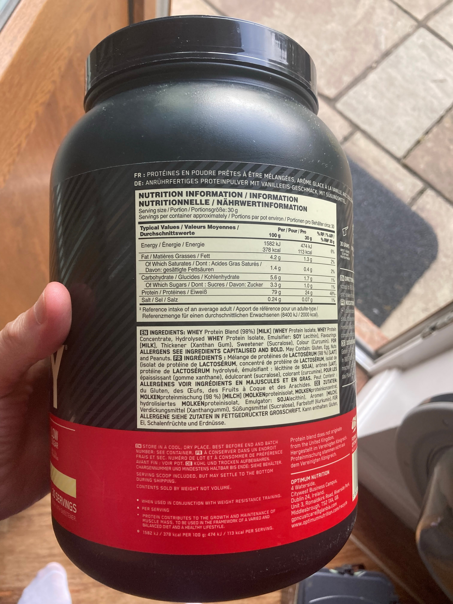
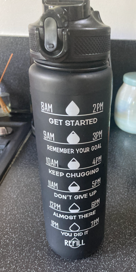

About
Thoughts on...
Thoughts on...
contact: pauldor2026@gmail.com
RAM
Edge and Chrome use a tonne of RAM - laptop has one free slot and has 8gb RAM in the other which is 3200 MT/s SODIMM and reserves 623 MB. Didn't realise double clicking creating a handy little real time performance dash.

original research
1. Analysis of Your Laptop's System Performance
The RAM Bottleneck: We initially looked at a Windows Task Manager screenshot showing your CPU running smoothly at 8–10%, but your Memory (RAM) maxed out at 92%. This revealed a textbook hardware bottleneck: your processor had plenty of speed to spare, but it was visually choked by a lack of physical workspace.
The Symptoms (Page Filing): When RAM fills up past 90%, Windows is forced to employ a trick called Virtual Memory or Page Filing, actively moving inactive app data off the fast RAM chips and onto your much slower hard drive/SSD. This explains why apps like Microsoft Edge or Teams stutter when you switch back to them, even if your CPU usage remains low.
The Culprits: Your primary memory consumers were browser processes (Microsoft Edge taking up over 1.1 GB across 22 processes) and communication platforms (Microsoft Teams running over 540 MB).
2. Browser Alternatives (From a RAM Perspective)
While Microsoft Edge features excellent "Sleeping Tabs" optimizations, you asked about more efficient alternatives. We broke down the options by how they treat memory:
Brave: Excellent for naturally lowering RAM usage because its built-in ad and tracker blocker strips away resource-heavy background scripts before websites even load.
Mozilla Firefox: Ideal if you are a "tab hoarder" who keeps 20+ tabs open. Unlike Chromium-based browsers (Edge/Chrome) which launch a new process for almost every individual tab, Firefox caps its content processes to prevent linear memory spikes.
Opera GX: Best for manual enforcement. It includes a built-in RAM Limiter widget that allows you to set a strict ceiling (e.g., maximum 2 GB) on how much memory the browser can consume.
3. Hardware Upgrades & Cost
Your second Task Manager screenshot gave us the exact hardware specifications of your Dell laptop: DDR4 SODIMM RAM running at 3200 MT/s, with 1 out of 2 slots used. This means you currently have one 8GB stick installed and an entirely empty slot ready for a quick upgrade:
Option A (24GB Total): You can purchase a single 16GB DDR4 3200MHz SODIMM laptop stick (approx. £30–£45) and pop it straight into the empty slot. This is the cheapest way to completely eliminate your 92% lag threshold.
Option B (32GB Total): You can buy a matched 32GB kit consisting of two 16GB sticks (approx. £70–£95), removing your current 8GB stick entirely to run them together in dual-channel configuration.
Difficulty: This is rated a 2/10 on the difficulty scale. It requires unscrewing the bottom panel of your laptop, angling the stick into the slot, and clicking it down into its side brackets.
4. Real-Time Tracking & Virus Detection
We discussed how to use Task Manager to monitor your system and spot rogue malware behavior:
What to watch: Keep an eye on Disk Response Time (healthy is under 20ms; spikes to 500ms+ indicate a choking drive) and idle Network Throughput (sustained background uploads when you aren't doing anything can mean a virus is leaking data).
Virus Clues: Watch out for the "Whack-a-Mole" effect where 100% CPU usage drops instantly to 10% the moment you open Task Manager (malware hiding itself), or unrecognized, high-resource processes with random names. Adding the Command Line column in Task Manager allows you to see if innocent-looking files are executing from hidden temporary folders instead of proper system directories.
5. Smart Software Maintenance
Windows Updates: We established that you should not check for updates daily, as the background scans waste valuable RAM and CPU power. Instead, you should rely on Windows' automatic background cycle or check manually just once a month. To minimize disruption, we configured your Active Hours to block updates during work, and turned off the "Get latest updates as soon as they are available" feature to ensure you only download stable monthly releases.
Safe iPhone SE Updating: Because a past update left your device "bricked," you have safely held your iPhone SE on iOS 16.2. We reviewed how to break out of this loop safely if you ever want to optimize your battery life or patch security vulnerabilities:
Update via Computer: Plug the iPhone directly into your Dell laptop via USB to avoid Wi-Fi drops, letting the computer handle file integration.
Storage Headroom: Ensure 10 GB to 15 GB of storage space is free on the phone before hitting install so it has room to unpack.
The Safety Net: Computer updates automatically create an immutable local backup of your photos and data first, allowing you to completely restore your device if a freeze ever occurs.
1. Computer Performance & RAM Management
• The RAM Bottleneck: A system can experience high RAM usage (e.g., 90%+) even when the CPU is running comfortably at a low percentage (e.g., 10%). This indicates a memory capacity bottleneck rather than a lack of processing power.
• Page Filing Impact: When physical RAM is near capacity, Windows utilizes "Virtual Memory" (Page Filing) to shift background tasks to the hard drive or SSD. This process causes noticeable system stuttering and application lag while the CPU waits for data retrieval.
• Browser Mitigation: Browsers heavily impact RAM. To reduce memory load, users should enable features like Memory Saver or Efficiency Mode to freeze inactive background tabs, or switch to more resource-efficient browsers like Brave or Firefox (which caps content processes for high tab counts).
• Hardware Upgrades: Upgrading laptop memory (RAM) is a straightforward process, especially if an empty SODIMM slot is available. For systems utilizing DDR4 3200MHz RAM, users can cost-effectively add a single 16GB stick (approx. £30-£45) to combine with existing memory or install a full 32GB kit (approx. £70-£95).
2. Windows Updates Scheduling
• Avoid Daily Updates: Manually checking for or installing updates daily introduces unnecessary background processing lag and is counterproductive.
• Optimal Approach: Rely on Windows' automated background processes, which silently handle stability patches and antivirus definitions during idle periods.
• User Controls: Configure Active Hours to prevent sudden forced restarts during core working windows, and disable the "Get the latest updates as soon as they're available" toggle to ensure the system only receives stable, fully vetted monthly releases.
3. Safe iPhone Updating (Avoiding Bricks)
• The Root Causes of Bricking: Devices generally freeze or "brick" during an operating system update due to unexpected battery drainage, sudden Wi-Fi disconnection mid-install, or insufficient internal storage space to safely unpack the files.
• Risk Mitigation Strategy:
• Computer-Based Updates: Connect the iPhone directly to a laptop via USB and update through official desktop software. A wired connection avoids Wi-Fi instability, and the computer validates the update file before applying it.
• Storage Headroom: Ensure at least 10 GB to 15 GB of storage space is clear on the iPhone before attempting an update to prevent system choking.
• Local Backups: Computer-based updates automatically generate a full local mirror of the device data, allowing for an immediate restore to previous conditions if an error occurs.
....Protein 070620261138.
whey protein powder is produced as a by-product of cheese manufacture. The more expensive isolate is produced by an adiditonal filtration process to remove lactose and fat. However it is suggested it only removes approx 10 calories and alters the calorie to protein ration by about 2-3g of protein. Other than that is basically identical! The rest of the cost appears to be marketing and taste? On the basis that i take it in semi milk there is no sense it paying for an isolate and if i am bothered by the slight reduction in protein per serving then I can overfill the serving spoon.

original research
Protein Powder Breakdown & Cost Savings
Summary of protein powder comparison based on current tub (Optimum Nutrition Gold Standard 100% Whey):
Pricing & Alternatives
• Current Tub: Asda price is £36.74 for a 900g tub (Vanilla, 30 servings).
• Cheaper Alternatives: Myprotein Impact Whey or Bulk Pure Whey cost around £25 for 1kg (approx. 33 servings), saving over £11 while offering more powder.
What is Isolate vs. Concentrate?
• Isolate (Current Tub): Extra-filtered to remove almost all fat, carbs, and lactose. It digests very quickly and is 90%+ pure protein.
• Concentrate (Budget Option): Standard filtration, leaving a tiny bit of natural dairy fats and carbs (70-80% pure protein).
Is Isolate Worth the Money?
• No, especially when mixed with milk. Gram-for-gram, both build the same amount of muscle.
• A pint of semi-skimmed milk adds ~260 calories. Mixing Isolate + Milk (370 kcal) vs. Concentrate + Milk (380 kcal) results in a negligible 10-calorie difference.
• Conclusion: Unless standard whey causes stomach bloating/lactose issues, switch to a cheaper concentrate brand to save money.
While Asda’s own-brand whey will build the exact same amount of muscle as a big-name brand, there *are* a few noticeable differences when you step down from a premium name like Optimum Nutrition (or dedicated fitness brands like Myprotein and Bulk) to a budget supermarket own-brand.
Here is what you’ll actually notice:
### 1. The "Texture" and Mixability
* **The Difference:** Premium powders are heavily instantised (usually using a tiny bit of soy or sunflower lecithin) to make them dissolve effortlessly. Supermarket budget brands tend to be a bit more stubborn.
* **The Reality:** It might require a bit of extra shaking to break up tiny floury clumps, or it might leave a slightly "thicker" or grainier mouthfeel. Since you are mixing it with a pint of milk, this is less noticeable than if you were using water, but a shaker with a good wire blending ball is highly recommended.
### 2. Flavour Depth
* **The Difference:** Optimum Nutrition spends massive amounts of money on flavoring science to make their "Vanilla Ice Cream" or "Double Rich Chocolate" taste like actual milkshakes. Asda's "Rich Chocolate" or "Rich Strawberry" will taste much more basic and sweeter—think budget school-cafeteria milkshake rather than a luxury dessert.
* **The Reality:** It’s completely drinkable, but it is definitely a "chug it down" experience rather than something you sip and savour.
### 3. Protein Purity Per Scoop
* **The Difference:** If you look at the percentage of protein by weight, your Gold Standard is ~80% protein. Dedicated budget brands like Myprotein Impact Whey sit around 75-77%. Asda's own brand sits a little lower, closer to **70% protein by weight**.
* **The Reality:** To get the exact same 24g of protein you get from your current tub, you just have to use a slightly larger scoop (or about a scoop and a quarter) of the Asda powder. Because it's so cheap, you are still saving massive amounts of money even if you use a bit more powder per shake.
### 4. Fillers and Thickening Agents
* **The Difference:** To keep the price at £7, supermarket brands sometimes use slightly more thickening agents (like Xanthan gum) and cheaper artificial sweeteners to mask the raw dairy taste.
* **The Reality:** If you have a rock-solid stomach, you won’t notice a thing. If you are highly sensitive to sweeteners, it might feel a little heavier on your digestion than your premium tub.
### Summary
If you just want to hit your protein goals without breaking the bank, **Asda’s own-brand is an absolute bargain.** Just be prepared for it to be a little sweeter, slightly thicker, and require an extra 10 seconds of aggressive shaking!
....Hydration for humans 060720261112.
Water blindly follows salts through the small intestine. It follows at a rate of approx 250ml every 20 mins. It follows because of the principle
of Osmosis. Nature abhors a lack of balance and the water equalises the salt concentrated blood plasma which approx ideally 90:1. So drink at a rate that allows absorption otherwise chugging creates urine which is the systems balancing act via the kidneys. If you dont have enough hydration in blood plasma the brain creates the hormone Vasopressin. Signals kidneys to pull water and preserve which is why piss goes darker brown. When the equilibrium is established the Vasopressin levels drop and the kidneys release water. wow! clear piss again. electrolytes do as suggested , they support electrical signalling in the body : the body is a giant electrical signalling process. Low electrolytes scramble this signalling . Is this what brain fog is? electrical disruption? Caffeine only really an issue over 300mg a day. The water in the coffee contributes to the water volume.

Original research notes.
Daily Targets & Pacing
Personal Baseline: 2.5 to 3 liters of total fluid daily (approx. 10–12 standard 250ml glasses).
The Bottle Protocol: Your 1-liter bottle should be filled twice a day (once for the 8 AM–1 PM morning session, and once for the 2 PM–7 PM afternoon session).
The Speed Limit: The small intestine can only absorb 200ml–250ml of water every 15–20 minutes via osmosis (water following salt across cell membranes). Avoid chugging to catch up; excess water just gets rapidly flushed by the kidneys.
Cellular Mechanics
Vasopressin: The brain's water-saving hormone. When dehydrated, it signals the kidneys to pull water back into the blood, leaving urine highly concentrated and dark due to the pigment urobilin. When hydrated, vasopressin drops, and the kidneys freely expel clear urine.
Electrolytes: Minerals (sodium, potassium, etc.) that conduct the body's electrical currents. Dehydration scrambles these signals, causing muscle cramps.
Digestion & Wet Stools: The large intestine normally recycles the final 1-2 liters of water from digestion. Watery stools mean the gut moved too fast to absorb it, or an undigested substance pulled water into the bowel.
Fluid Modifiers
Caffeine: A mild diuretic, but the fluid in a cup of tea or coffee outweighs the loss. It counts toward your daily total.
Alcohol: A strong diuretic that suppresses Vasopressin, forcing kidneys to expel up to 4x the liquid consumed. Use the 1-for-1 water spacer rule.
....Launch Jupyter 010720261310
from cmd launch a Jupyter.
use jupyter command to see what further commands are available
>>jupyter
JupyterLab installed. for running .ipynb files.
>>jupyter lab
http://localhost:8888 launches in web browser.
terminal starts a local webserver by starting a kernel (server) to display folders as webpages
localhost means this pc this IP address locally.
8888 is the apartment address in the apartment block (local host).
it will launch a second at address : http://localhost:8889.
it will security handshake using a secure token : http://localhost:8888/?token=xyz.
this ensures anyone on the local network cant see it.
when you open a port the potential exists for someone else to use that open port (apartment door) but the token means there is a guard with a pw standing guard and you can't enter without it.
updated 040720261017 : Jupyter automatically generates a unique, one-time Security Token (a long string of random letters and numbers) every single time you launch the server. This token acts as a cryptographic password. If you manually open a completely different browser tab or a private window and just type http://localhost:8080, you won't get straight to your files. Instead, you'll be stopped by a gray screen asking for a Password or Token.To get past this screen, you have to find the terminal window where Jupyter is running, copy the long string of text after token=, paste it into the box, and click log in. Once you do this, Jupyter drops a small file called a cookie into your browser cache so it remembers your browser and doesn't ask you again for that session. this is to be done as a lab session added to keep note . i can see all session tokens using : >>jupyter notebook list
....Hunger 040720260917.
Protein and Hunger Hormones.
ghrelin ("Empty" Light): Produced in the stomach when empty; signals the brain to seek food. Levels drop once food is consumed.this is the driver honking the horn in my flow_chart.
leptin ("Full" Gauge): produced by fat cells; signals long-term energy reserves. Dropping levels during dieting trigger increased appetite and a slower metabolism. this is the email to corp hq in my flow chart which is a report on warehouse inventory.
the Protein Advantage: protein effectively suppresses ghrelin and stimulates leptin, increasing satiety and helping maintain a caloric deficit naturally.
the Carb Effect: Carbohydrates cause temporary water retention (via glycogen storage) which can mask weight loss on the scale, and they offer lower satiety than protein.
i can trick the lepton manager by reducing slowly the input raw materials so i start to empty inventory. i can keep the driver from honking the horn by keeping him loaded with low cal food such as fibre and fluids and protein which is a thermic effect . really need to write about gluconeogenesis.

....GABA seesaw 030720261150.
1. The Autonomous Seesaw: Glutamate vs. GABA
The Blueprint: Your central nervous system operates on a chemical seesaw between Glutamate (the excitatory neurological gas pedal) and GABA(the inhibitory braking system).
The Baseline: Due to your neurodevelopmental background, your brain naturally over-produces glutamate, keeping your neurons firing rapidly. Historically, this caused internal static, childhood bedwetting, insomnia, and lifelong sleepwalking (caused by an incomplete motor kill-switch transition during slow-wave sleep).
The Magnesium Intervention: Shifting your Magnesium Malate to 5:00 PM (with dinner/tea) and Magnesium Glycinate to 9:00 PM (with your protein shake) successfully balanced the seesaw. Magnesium acts as an NMDA receptor antagonist (blocking excess glutamate) and a GABA agonist (engaging the brakes), facilitating deep, unmedicated nocturnal repair and cellular ATP replication.
2. Chronobiological Caffeine Deployment
The Cortisol Window: Because you wake at 4:48 AM "raring to go," your body produces a potent, natural cortisol spike to drive alertness. Introducing heavy caffeine during this window creates fast stimulant tolerance and subsequent afternoon adrenaline crashes.
The 60-Minute Focus Ramps:
06:30 AM (The Creative Anchor): Consuming a medium PG Tips Black Tea provides a low stimulant load (~45mg caffeine) paired with high levels of L-Theanine. L-Theanine crosses the blood-brain barrier to stimulate alpha brain waves, creating a state of "relaxed alertness" perfect for your reading and writing block without triggering hyperactivity.
08:00 AM (The First Peak): Delaying your first full McDonald's White Coffee (~120mg caffeine) until your natural cortisol tapers allows the stimulant to maximize executive function right before your 08:30 AM Ignition Breakfast (2–3 eggs + B-complex).
12:30 PM (The Afternoon Bridge): Your second White Coffee lands precisely at the half-life of the first, smoothly clearing the afternoon slump and fully exiting your system by 9:30 PM to protect sleep architecture.
3. The B-Vitamin Diagnostic Footprint
The Historic Crash: Your previous adverse, manic reactions to B-complex supplements were caused by a severe magnesium deficiency bottleneck. B vitamins heavily accelerate the methylation cycle (synthesizing dopamine and adrenaline) and demand magnesium to convert into active energy (Mg\text{-}ATP).
The Resolution: Forcing this premium fuel into cells lacking a mineral baseline slammed the glutamate accelerator down with zero GABA brakes, causing systemic over-excitation. Because your evening magnesium syntax now pre-saturates your cells, your morning **08:30 AM Ignition protocol can safely utilize the B-complex to set a clean cognitive baseline.
4. The 80/20 Rule of the Protocol
To maintain this elite trajectory without psychological fatigue, ruthlessly prioritize the Vital 20%:
1. Training Volume: Hit the 1–3 RIR (Repetitions in Reserve) Optimal Zone** on your working sets to trigger the mTOR pathway. Ignore hyper-complex tempos; controlled ~1s eccentrics are sufficient.
2. Nutrient Syntax: Keep magnesium restricted to the evening (5:00 PM Malate with dinner; 9:00 PM Glycinate with protein) to allow daytime neural drive while maximizing overnight mitochondrial repair.
3. Caffeine Windows: Keep 6:30 AM light (PG Tips black tea) and deploy your two primary white coffees at 8:00 AM and 12:30 PM.
You have transitioned your biology from a decades-long state of chronic sympathetic survival into a highly optimized, calculated anabolic loop.


....Hypertrophy 010720261218
When we boil it down to the absolute fundamentals, muscle growth relies on three foundational pillars: Mechanical Tension, Proximity to Failure, and Systemic Homeostasis.
The primary mechanism for hypertrophy is mechanical tension.
it begins at the mechanoreceptors of the muscle cell membrane (the sarcolemma)
what are mechanoreceptors?
these are tiny receptors that under tension create an electrical signal
what is the sarcolemma?
is the cell membrane of the muscle cell
the cell is cylindrical and contains lots of myofibrils that are responsible for contraction
it is uniquely equipped to carry electrical signals to the T-tubules to cause muscle contraction
once this signal is initiated downstream it triggers the mTORC1 (mammalian target of rapamycin complex 1) pathway. This is the master switch for muscle protein synthesis
maximize tension, you must control the eccentric (lowering) phase to exploit stretch-mediated hypertrophy, and you must stabilize your skeleton so the target muscle experiences 100% of the mechanical load.
focus on lowering the weight under control
motor units are recruited in size order from smallest to largest
most growth comes from large, type II glycolytic muscle fibers but they won't recruit unless they have too.
aim for 1-3 reps prior to all fibres failing to perserve the central nervous system
carrying extra muscle mass is a luxury that the body cant really afford and is not needed
muscle contraction requires ATP - supply adequate ammounts of electrolytes such as magnesium to fund ATP
....walking. 240620261314
Most days I walk at 6.00am around a truck stop.
Each lap takes about 15 mins. There is lots going on during the walk.
It is a major truck stop for the m6.
I imagine they think I am a truck driver. At the end of the walk today I observed a curiosity.
Two lads in a car speeding on the adjacent carpark.
like 40mph speeding at approx 7am?
I wasn't annoyed like the guy they nearly crashed into, that they then had to drive past, as he charged his Tesla.
Boy was he pissed off , as he practically tried to stop them like superman.
Just curious about the lack of self awareness.
I could not fathom a reason nor how i could find myself in the decsion loop.
update 250620261000 : Anonymity is one idea i came up with. I looked into it and there is a theory caled deindividuation theory -
when we can't be identied we lose self awareness and empathy for others. Sounds like X lol. Funny what people test but experiments have been
done with this. they did a horn honkiung experiment to test speed and frequency of honking based on how identifiable the person was.
The other idea I had was perhaps it's to do with sensation seeking. I have had the experience myself of driving faster depending on the type
and volume of music i have on. Marvin Zuckerman in the 1960s pioneered the sciecne of sensation seeking. Turns out some folk have totally
different brains than the rest of use and have a higher density of dopamine receptors than average and require higher levels of stimulation.

Update 290620261143.it will need to be documented that due to the article on #coffee i changed this to walking before coffee. i have plans to Increase
he number of steps. but essentially it will always involve coffee - walking - reading -writing.
....html images. 250620261058
it has been a long time since i had to write in markup. basic syntax :"<img src="lymmservicesarialviewimage.png" alt="arial view of service station i walk around" style ="width: 30%; margin-top: 20px;">
wrapping code markup enables me to trick the browser into not running an image. the '&'lt = less than and '&'gt = greater than.
it presented red which confused initially until i realied i had styled code with a colour. which should have been obvious.
img element tags are self closing. i used aspect ratio to avoid lag for the user to reserve the required space.
....The spark 290620261118
"If we were stranded in a typical place in the universe, we would die almost immediately.
But that is because we do not yet know how to live there. A typical cube of space the size of our solar system
contains about a million tonnes of matter, mostly hydrogen. With the right knowledge,
one could transmute that hydrogen into all the elements one needed to build a space station,
and then one could live there, and thrive, and build a civilization." David Deutsch
Two things :
My life has always been immeasurably changed by knowledge examples include research on hypertrophy, coffee, touring Europe(see article),
fixing a floating shelf and tools(see article)
The other point is that Life without matter is dull AF. it struck me the first time i read that quote that being irritated by matter on earth makes absolutely no sense when you consider the alternative of sitting in that cube . suddenly everything became interesting (see rat article on death) and my curiosity (research opportunity) shot through the roof.
Knowledge is the lever I use to bend reality (software)
Matter is the hardware (the lego bricks).
"We all fish, better teach your folk / Give him money to eat, the next week he's broke." - jay z.
....Html internal linking 290620261055
Go down each heading and routinely give it an id="x" inside the h3
h3 id="x"
create the link using a href="#x"
this needs to go before the words you want to link from
then close off the word using /a
a href="#html">knowledge
internal example:
or if external:
href="external website page" target = "_blank" rel ="noopener">David Deutsch
"If you liked this, you can jump over to my article about a href="#quantum-physics">David Deutsch's theories.
.....Alt + z 010720261147
how to snap all paragraph text to the viewable windown in VS?
use Alt + z to instantly have it snap
….Coffee 290620260742
Every morning I drive to McDonald’s- walk - read - write - think and have a large white coffee. I m curious about caffeine. What it does ? Where it comes from?
Caffeine as produced my McDonald’s comes from the arabica bean produced in Asia . Picked from coffee cherries - large red flowers - then roasted . McDonald’s doesn’t roast as high as Starbucks hence Gue different taste and caffeine content .
There’s about 100mg ina large white and safe levels for humans are 300 mg per day. This is where it got interesting for me . Caffeine has a similar molecular shape to adenosine. It can occupy parking slots on the adenosine receptors that prevent actual adenosine from parking . The consequences of this are why we are all addicted to coffee.
Adenosine is responsible for making humans sleepy and tired. Sleeping metabolises the adenosine and frees up parking spaces . Meaning we awake gain. Cortisol empties the parking lot in the morning and as cortisol falls in the day the process repeats and adenosine fills the a spaces again. The adenosine is a by product of the breakdown of the cellular energy unit ATP.
Interestingly for me due to a sick parent having lupus the pharmaceutical drug methotrexate came up as caffeine acts in a similar but less targeted way . By blocking adenosine parking slots in specific organs such as kidneys and skin.
The take away for me was that caffeine can be used strategically if times correctly . Waiting a few hours on waking for cortisol to do it’s job of clearing the spaces and then block the adenosine with caffeine molecules keeps you alert and focussed . The half life means of you take another 100mg three hours later you potentially delay adenosine reaching the car park lot until mid afternoon.
The adenosine is building up in the background so when slots became available you get a wave of adenosine hitting the receptor. Potentially causing a crash of tiredness.

About
start 230620261234 : This is a personal lab - to explore ideas and situations through writing.
It's not meant to be advice and I may change my views in the future.
updated 250620261039 : The syntax of dates and times on the site is daymonthyeartime
updated 290620261123 : This may well outlive me and echo throughout time. my kids and grandkids might read this.
I may add a timeline of events to help construct a clear image of what has influenced my life - but is that a security issue?
i noticed some time ago that most of my issues evaporate when i am curious and creating. Its a subtle process to write for myself and
preventing part of my brain writing for someone else. I enjoy deep work that lacks context shifting. It seems to fire my neurochemistry
that makes my days feel fulfilling and well spent. i connect and relate well to people that are intensely curious about the world around them.
I am intrigued and slighly repulsed by people that 1. Have no curiosity 2. Aren't problem solvers and prefer destruction. I have a written well
thought value system that can be boiled down to a traders mentality. value for value. in my business years i used Felix dennis as an unoffical
mentor - whom i met a few times at poety recitals. he once said -"If I had my time again, knowing what I know today, I would dedicate myself
to making just enough to live comfortably... as quickly as I could. Riches aren't particularly worthwhile in themselves... Whoever dies
with the most toys doesn't win." this is my experience. this website is my implementation of that realisation. i still get young bucks
asking me how to make money. they are asking the wrong person sincerly. I dont have the bandwidth or patience to explain my thoughts.
Go read 'Felix Dennis' how to get rich. Find out for yourself. I live like a comfy vagabond but i have created time to be curious - build and
write for mysef.
....What I'm doing now
Updated: 290620261154
This is my now page.
Currently focusing on.
Reading: Painted Veil by W.Somerset.Muagham.
Writing: mostly by hand in a private journal to improve my character and parenting.
Creating: this blog, sql scripts, webscrapers, sql databases for own dats such as banks and garmin. diy projects - learning about tools and buying new tools.
Teaching: my youngest gcse maths aka maths club.
Exploring: planning a trip around Europe this year 2026.
Data analysis of the UK energy sector. Mainly the smart roll out.
Back to Top ↑